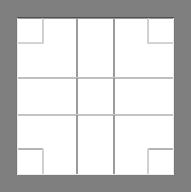

Introduktion
Hvis du ikke har GIMP'en installeret skal du hente den her: https://www.gimp.org/downloads/. Følg installationsvejledningen.
Overblik over GIMP'en'
Gimpens brugerflade består af 4 områder:
- Værktøjsmenu
- Værktøjsindstillinger
- Arbejdsbord
- Faneblade (ekstra funktionalitet)

Vær opmærksom på, at jeg anvender et andet farveskema og andre ikoner end GIMP'en starter op med. Jeg bryder mig ikke om den mørke brugerflade, da det er mere besværligt at læse lys tekst på mørk baggrund en omvendt (negativ tekst))
Du kan selv ændre indstillingerne ved at vælge menuen: Redigér → Indstillinger

Konkret har jeg ændre følgende:
- Grænseflade → Tema → Light
- Grænseflade → Ikontema → Color
Hvis du senere skal følge guides på nettet, kan du ændre sproget til engelsk ved at klikke på Grænseflade
Har du ICC profiler til dine enheder skal de konfigureres i menuen: Farvestyring
Har du en tegneplade skal den konfigureres i menuen: Inputenheder.
Generel anvendelse
Scroll-knap
Scroll-knappen er meget anvendelig til at bevæge sig rundt på billedet.
Op/ned: bevæge billedet op og ned
Shift+op/ned: Bevæge billedet til siderne
Primary+op/ned: Zoom ind og ud/p>
På PC: Ctrl På Mac: CmdPrimary knappen
Gemme billeder
Som standard gemmer GIMP billeder i sit eget XFC format (eXperimental Computing Facility), så hvis man vil gemme i standardformaterne JPG, PNG eller TIFF, skal man eksportere billedet.
Fordelen ved at anvende XCF fremfor standardformaterne er, at man beholder lag, transperans og specialfunktioner fra GIMP. I redigeringsfasen bør dette være formatet man gemmer i.
Du skal være opmærksom på at XCF ikke er bagudkompatibel. Det betyder at du kan godt åbne XCF-filer fra ældre versioner af GIMP'en, men ikke modsat.
Du kan læse mere om standardformaterne JPG og PNG her: her.
Gemme som XFC
GenvejstasterGem: Ctrl+s
Gem som: Ctrl+Shift+s
Hvis du vælger punktet: Gem denne XCF-fil med bedre, men langsommere komprimering, så vil billedet fylde en del mindre (mindre end halvdelen) end hvis du bruger standardkomprimeringen.
Eksportere som JPG
Genvejstaster
Eksporter: Ctrl+e
Eksporter som: Ctrl+Shift+e
Den letteste måde at bestemme filformatet er ved at skrive det direkte ind i filnavnet, for så vil GIMP'en automatiske gemme i det format.
Anvend standardindstillingerne, med mindre du ved hvad du laver.
For at gemme som jpg navgiver man filen med .jpg til sidst. Når man klikker , kommer følgende vindue frem.

Eksporter som PNG
Genvejstaster
Eksporter: Ctrl+e
Eksporter som: Ctrl+Shift+e
Den letteste måde at bestemme filformatet er ved at skrive det direkte ind i filnavnet, for så vil GIMP'en automatiske gemme i det format.
Anvend standardindstillingerne, med mindre du ved hvad du laver.
Usynlig baggrund
Hvis du vil arbejde med usynlig baggrund skal billedet have en alfa-kanal. JPG understøtter ikke usynlige beggrunde, så det kræver at du arbejder med (gemmer i) PNG eller et andet lignende format.
Du kan se om billedet har en alfa-kanal ved at højreklikke på billedet og vælge: lag→Gennemsigtighed.
I dette tilfælde har billedet en alfakanal.
Arbejdsgang
Hvis du kun skal anvende GIMP'en til at redigere billeder kan du ved 3 simple trin forbedre dit billede ret meget. de tre trin er:
- Beskær billedet (crop)
- Juster billedet niveauer (niveau)
- Fjern uønskede elementer (klon/reparation)
Arbejder du i med RAW-billeder, så vil punkt 1 og 2 være ordnet i RAW editoren
Værktøjer
Her vil du blive introduceret til en række centrale værktøjer til efterbehandling af billeder. Der vil ikke blive gået i dybden med det enkelte værktøj, men sådan at det kan bruges simpelt og effektivt. Med andre ord - det er de funktioner jeg oftest anvender selv.
Man kan enten klikke på talværdien og indtaste en ny, eller man kan justere skyderen på 2 måder når man holder musen over feltet:
- Med rulleknappen på musen
- Ved at trække med musen
Man kan trække med musen på to måder. Holder man musen i den øverste halvdel af skyderen (En lodret pil) justerer man værdien efter musens position på skalaen. Hvis man holder musen i den nederste halvdel kan man finjustere værdien.
Dobbeltværktøjer
Ved flere af de nedestående værktøjer er der en dobbeltfunktion f.eks. ved zoom, hvor man både kan zoome ind og zoome ud. Funktionen anvender som udgangspunkt den først nævnte, og hvis man vil anvende den modsatte funktion skal man holde Ctrl nede mens man anvender musen
Rektangel og elipse markering
Markerer et område enten som rektangel eller elipse
Ikoner
 - rektangulær
- rektangulær
- elipse
Genvejstaster
- r - rektanguler markering
- e - elipse markering
Værktøjsindstillinger
Farvemarkering
Markeringsværktøjet bruges til at vælge områder på billedet der har samme farvenuancer.
Ikoner
- Flydende markering (område)
- Farvemarkering (hele billedet)
Genvejstast
u - Flydende markering
Shift+o - farvemarkering
Værktøjsindstillingerne
Ved at justere på Tærskel-værdien ændrer man hvor mange farvenuancer der skal markeres. Jo mere præcis man vil gøre det - jo lavere skal den være. Hvis man ønsker at tilføje nogle flere områder til sin udvælgelse holder man Shift nede samtidig med at man klikker. Så bliver de nye områder tilføjet.
Frihånds- og saksemarkering
Skal man have klippet områder ud baseret på form anvender man enten frihånds- eller saksemarkeringsværktøjet. Begge værktøjer fungerer ved at man klikker på kanten af det område man vil markere. Forskellem mellem dem er:
Frimarkering: Markerer området ved hjælp af rette linier imellem de punkter man har valgt.
Saksemarkering: Markerer området ved at finde linier i billedet. F.eks. kan de følge en kant.
Der hvor man klikker kommer der en cirkel og programmet sørger for at trække en linie imellem disse. For at afslutte markeringen klikker man i den første cirkel. Herefter kan man trække i cirklerne for at finjustere.
Når man er tilfreds klikker man inde i det markerede område og kanten skifter så man kan se det markerede område.
Ikon
Frimarkeringsværktøj
Saksemarkeringsværktøj
Genvejstast
Frimarkeringsværktøj: f
Saksemarkeringsværktøj : i
Værktøjsindstillingerne
Ingen relevante indstillinger til dette.
Cropping - beskæring
Værktøjsindstillingerne
Beskæringsværktøjet bruges til at tilrette et billede så de rigtige ting kommer i fokus. Når man anvender værktøjet får bliver det fravalgte område udtonet, så man kan se det færdige resulatet. Når man er tilfreds med resultatet klikker men på feltet eller trykker Enter.
Ikon
Genvejstast
Shift+c (crop)Værktøjsindstillingerne
VærktøjsindstillingerneI denne fane er der to indstillinger der er interessante: Beskæring med fast forhold og hjælpelinier
Fast beskæringsforhold
Nogle gange har man brug for at en billede skal have en vis bredde eller højde - eller at der skal være et konkret forhold mellem bredde og højde. Ved fast bredde og højde angives værdien i pixels. Når man angiver et forhold skal det gøres ved hjælp af : (kolon). Skal siderne være lige lange skriver man f.eks. \( 1:1 \). hvis det skal være til en computerskærm kan det være \( 1920:1080 \). Herefter vil den boks man trækker være i det forhold.
VIGTIGT: Generelt er det en god ide, at give billedet flere pixels end angivet. Computeren vil selv tilpasse billedet korrekt, blot det har de rette forhold.
Hjælpelinier
For at hjælpe en med at lave en god beskæring kan man anvende hjælpelinier. De to mest anvendelige er centerlinier og Gyldne snit.
| Centerlinier | Gyldne snit |
|---|---|

|
 |
Med mindre noget skal stå centreret bør linierne i et billede følge det gyldne snits linier , da det er naturligt for os at "læse" billeder på den måde.
Rotering
Roteringsværktøjet bruges f.eks. til at finjustere hældningen på et billede. Det kan f.eks. være hvis horisonten på et landskabsbillede er lidt skæv. Ved at holde Ctrl nede rotere billedet med 15° af gangen.
Når man har roteret et billede vil dele af billedet være udenfor laget. Dette retter man ved at Højreklikke og vælge Billede→Tilpas lærred til lag.
Ikon
Genvejstast
Shift+r
Værktøjsindstillingerne
Ingen relevante indstillinger til dette.
Størrelse
Størrelsesværktøjet anvender til at ændre på billedets størrelse.
Når man har ændret størrelse på et billede kan det være større eller mindre end laget. Dette retter man ved at Højreklikke og vælge Billede→Tilpas lærred til lag.
Ikon
Genvejstast
Shift+s
Værktøjsindstillingerne
Ingen relevante indstillinger til dette.
Perspektiv
Her er der tre forskellige værktøjter til at ændre billedets perspektiv: Trapez-, perspektiv- og vendeværktøjet
Trapezværktøj: Vrider billedet men fastholder de vandrette linier (mus rykkes højre/venstre) eller lodrette linier (mus rykkes op/ned).
Perspetivværktøj: Kan fixe skæve linier i et billede
Vendeværktøj: Kan spejvende et billede ved at klikke på det, eller vende det på hovedet ved at anvende Ctrl+klik.
Når man har ændret størrelse på et billede kan det være større eller mindre end laget. Dette retter man ved at Højreklikke og vælge Billede→Tilpas lærred til lag.
Ikon
Trapezværktøj
Perspektivværktøj
Vendeværktøj
Genvejstast
Trapezværktøj: Shift+h
Perspektivværktøj: Shift+p
Vendeværktøj: Shift+f
Værktøjsindstillingerne
Ingen relevante indstillinger til dette.
Transformer
Ikon
Genvejstast
w
Værktøjsindstillinger
Kloning - Clone
Kloningsværktøjet anvendes hvis man vil erstatte noget på et billede med noget fra et andet sted. Det kan f.eks. være en en ledning man vil fjerne fra et gulvtæppe, eller en lampe man vil kopiere. Man vælger det man vil kopiere ved at sætte musen over det og venstreklikke mens man holder Ctrl nede. Herefter kan man "tegne" med det forvalgte område ved hjælp af musen.
Ikon
Genvejstast
c
Værktøjsindstillingerne
I denne fane er der tre indstillinger der er interessante: Pensel, størrelse og opacitet
Pensel
Når man arbejder med tegnefunktioner i GIMP'en anvender man pensler. penslerne beskriver hvordan man tegner med den effekt man har valgt. Her vil jeg gennemgå de 4 pensler jeg anvender mest - de cirkulære.

Forskellen mellem dem er måden kanten på penslen fungerer. Ved den første vil kun det midsterste blive tegnet skarpt og det vil blive udtonet jo længere væk fra centrum man kommer.Ved den sidste (helt sorte cirkel) tegnes der skarpt i hele feltet.
Størrelse
I dette felt angives størrelsen på feltet.
Opacitet (gennemsigtughed)
Opaciteten styrer hvor meget af det oprindelige felt der tegnes. 100% betyder 100% aftegning og 0% ingenting. Dette kan anvendes hvis man gerne vil have teksturen fra det oprindelige til at blive gentaget, men at man samtidig vil beholde den lokale tekstur. Ved at sætte opaciteten lav (f.eks. 60%) vil man kunne lave en god blanding af områderne
Reparation - Heal
Ikon
Genvejstast
h (heal)
Reperationsværktøjet minder på mange måder om kloningsværktøjet. Forskellen mellem dem er, at reperationsværktøjet forsøger at lave en kombination af det udvalgte område (vælges med museklik og Ctrl) og målområdet ved hjælp af matematiske beregninger. På denne måde får man en kombination af de to områder. Reparationsværktøjet kræver en del mere computerkræfter end kloningsværktøjet, men kan lave rigtig gode sammenblandinger. Dette er en fordel hvis man f.eks. ønsker at reparere områder med ustruktureret tekstur f.eks. hud, jord, blade osv.
Værktøjsindstillingerne
Reparationsværktøjet anvender de samme indstillinger som kloning.
Viskelæder - Erase
Ikon
Genvejstast
Shift+e (erase)
Viskelæderet anvendes til at fjerne ting fra billedet.
Værktøjsindstillingerne
Viskelæderet anvender de samme indstillinger som kloning.
Sløring/skarphed
Slørings- og skarphedsværktøjet (Blur/sharpen) anvendes til at enten at sløre eller gøre detaljer skarpere. Værktøjet anvendes f.eks. til at udglatte hud (sløring), eller at gøre detaljer skarpere (skarphed). Når man bare bruger funktionen laver den sløring, men hvis man gerne vil gøre ting skarpere holder man Ctrl nede samtidig.
Ikon
Genvejstast
Shift+u
Værktøjsindstillingerne
Sløring/skarphed anvender samme indstillinger som kloning og reparation, men har udover også en indstilling for hastighed (rate) som beskriver hvor stærk effekten skal være.
Blødgør (udtværing)
Ikon
Lysne/brænde
Lysne- og brændeeffekten anvendes til enten at lysne eller mørkne (Ctrl) områder man tegner på. Det kan f.eks. anvendes til at gøre skyggeområder lysere eller mørkere.
Ikon
Genvejstast
Shift+d
Værktøjsindstillingerne
Lysne- og brændeværktøjet anvender samme indstillinger som ovenfor, men har herudover også en indstilling for virkningsgrad som beskriver hvor stærk effekten skal være.
Niveauer - Levels
Dette er en funktion som i nogle tilfælde kan gøre underværker ved billeder. Funktionen kan være svær at forstå, men det man gør er at flytte på hvad computeren skal tolke som sort og hvid. Det betyder at billeder kan få en bedre kontrast. Lad os prøve at kigge på et eksempel:
Ikon
Højreklik→Farver→Niveauer
Genvejstast
Desværre ingen :|
Værktøjsindstillingerne
Herunder er menuen for niveauer åbnet på et billede, og det man ser er en graf (kaldet et histogram), der beskriver hvilke farveniveauer fra sort (tv) til hvid (th) der er i billedet. I dette billede kan vi se at der næsten ikke er nogle sorte farver, men masser af farver i mellemområdet.
Det betyder at de mørke farver der er i billedet vil blive vist som grålige farver. Ved at flytte skyderen under de mørke farver. På den måde vil de grå farver blive helt mørke. Billedet vil få mere kontrast og virke mere "klar".
Som du kan se er der 3 skydere.
| Skyder | Resultat |
|---|---|
| 1 | Ændrer fra hvilket niveau farven skal tolkes som sort |
| 2 | Ændrer hvilket niveau der skal tolkes som det midterste. Billedet bliver lysere ved at trække mod venstre, og mørkere ved at trække mod højre |
| 3 | Ændrer fra hvilket niveau farven skal tolkes som hvid. |
Udover muligheden for at at definere hvordan farverne skal tolkes kan man også vælge hvilke farver der skal være synlige. Det gøred ved at anvende skyderen Outputmenuer.
| Skyder | Resultat |
|---|---|
| 4 | Fortæller fra hvilket mørkt niveau farverne skal vises |
| 5 | Fortæller fra hvilket lyst niveau farverne skal fjernes |